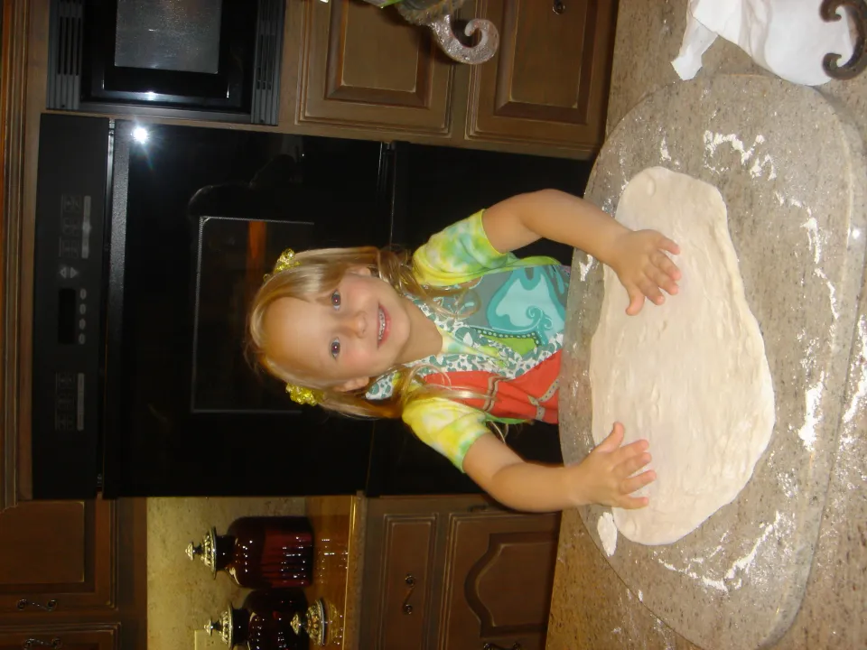
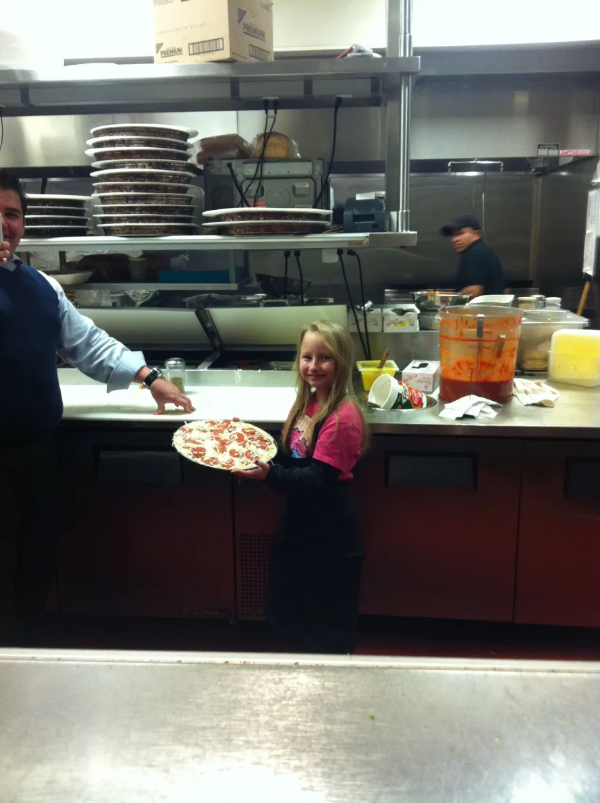
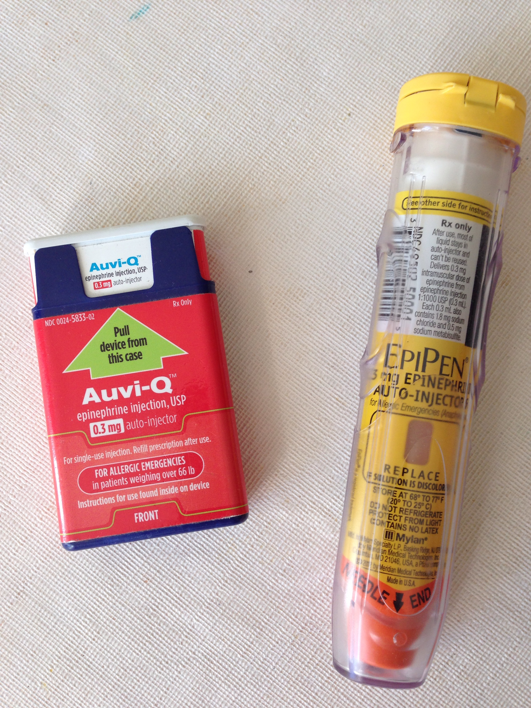

Food Allergy Awareness
Restaurants meant asking the server questions.
Lots of questions.
Sometimes I felt embarrassed, but I learned something important:
My safety mattered more than awkwardness.
Where I am now →
I had to know what I could eat.
I had to carry medication.
I had to trust my instincts.
Over time, I discovered foods I could safely eat.
I experimented carefully, tested labels, and asked questions.
Small victories made every meal feel special.

